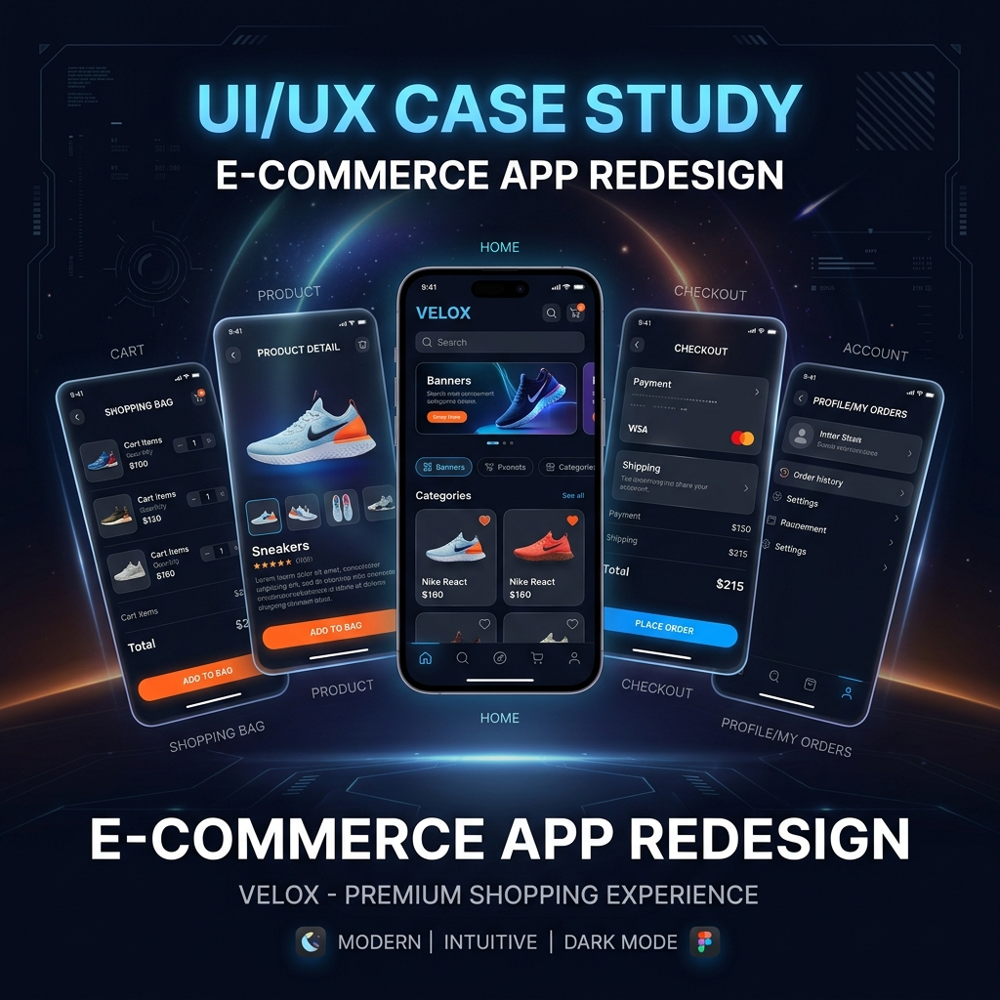

I am a UI/UX Designer driven by user-centric solutions. Based in Dehradun, I draw inspiration from the balance of my surroundings to craft interfaces that feel intuitive and natural.
During my time pursuing a Bachelor of Design, I developed a rigorous foundation in design thinking and visual storytelling. My curriculum moved beyond surface aesthetics, teaching me to investigate user needs and establish strong visual hierarchies.
When I'm not organizing artboards in Figma, you'll likely find me sketching landscapes or trekking through the lower Himalayas. These offline pursuits keep me grounded, offering fresh perspectives that find their way back into my design work.
My primary playground for wireframing, high-fidelity UI design, and advanced prototyping. I build scalable design systems and collaborate deeply within the Figma ecosystem.
Transforming complex user data and pain points into actionable insights. I conduct heuristic evaluations, usability testing, and journey mapping.
Structuring complex data intuitively.
Guiding the user's eye and attention effectively.
Leveraging Photoshop and Illustrator for custom vector assets, iconography, and advanced image grading.

Users were abandoning carts at checkout due to a cluttered interface. I conducted user research to identify pain points, restructured the IA, and focused on an intuitive, streamlined checkout flow.
Students struggled to find relevant materials across the platform. I mapped out user journeys, created interactive wireframes, and established a clean visual hierarchy to prioritize content discoverability.